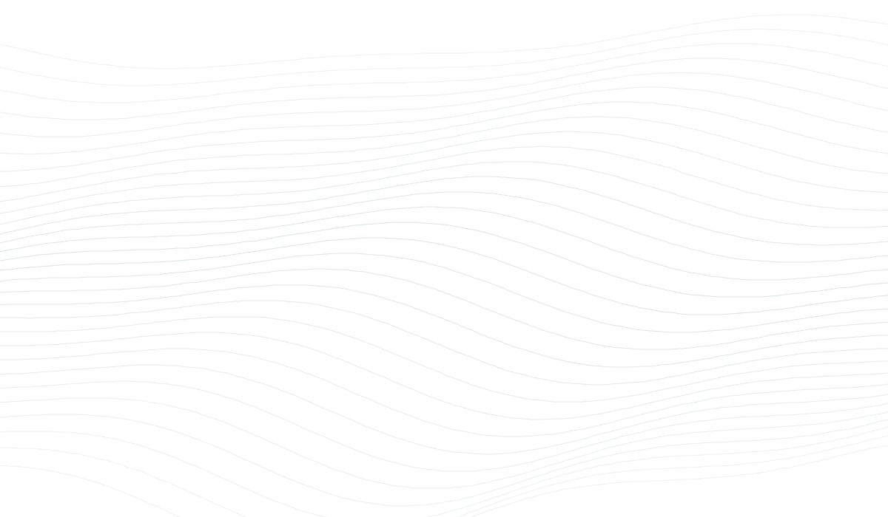

Jan van Eck
Co-founder

We design de novo enzymes to explore
more efficient and sustainable
industrial chemistry.
Technology
Biocatalysis offers a promising alternative to conventional chemistry, but suitable enzymes are not always available. We develop new enzyme scaffolds to address this gap, considering industrial requirements from the outset.
We start from your target reaction, selectivity and operating conditions, and design enzyme scaffolds to match.
Generative design enables us to create enzymes beyond what nature has evolved, with robustness built in from the start.
Team
A small team working at the overlap of protein design and industrial chemistry.
Co-founder
Co-founder

We're interested in connecting with companies and researchers working on challenging biocatalytic applications.
Get in touch